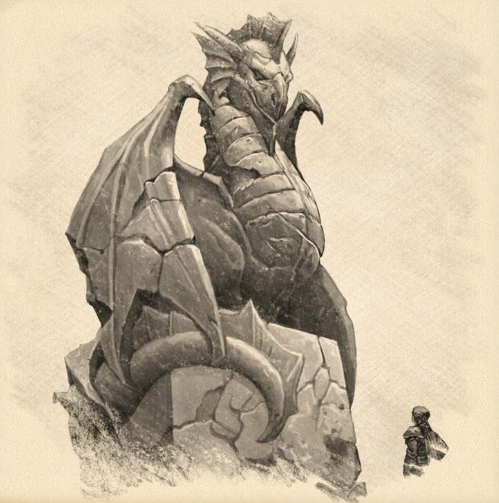

NSCs
Graf Argynvost
Herrscher von Argynvostholt.

Beziehungen:
- Ziehvater von Lugdana Argynvost
- War verbündet mit Sankt Markovia.
- Meister der Schlacht, der Taktik, des Schwertes und des Kampfes.
- Gründer des Ordens des Silbernen Drachens.
- Kam König Barov gegen die Terg-Streitkräfte nicht zu Hilfe.
- Im Schlaf in Argynvostholt von Graf Strahd erschlagen und geschändet.
- Sein Schädel ist auf Schloss Rabenhorst.
- Er war in Wirklichkeit ein Silberdrache.
--- Siehe Der Fall von Argynvost
KI-Zusammenfassung
Beruf / Rolle
Herrscher von Argynvostholt.
Beschreibung
Keine gesicherte textliche Beschreibung in den lokalen Notizen.
Beziehungen
- Lugdana Argynvost | Vater von
- Sankt Markovia | War verbündet mit
- Argynvostholt | Herrscher von
- Ordens des Silbernen Drachens | Gründer des
- Kam König Barov gegen die Terg-Streitkräfte nicht zu Hilfe
- Im Schlaf in Argynvostholt von Graf Strahd erschlagen und geschändet
- Schloss Rabenhorst | Sein Schädel ist auf
- Orden des Drachen: Nur ein Kontingent von ihnen wurde der Orden des Silbernen Drachen von Graf Argynvost
- Orden des Drachen: Da Prinz Strahd Graf Argynvost und seine Ritter des Silbernen Drachen zu Verrätern des "Ordens" erklärte, liegt die Vermutung nahe, dass Prinz Strahd oder sein Vater irgendwie mit dem Orden des Drachen zu tun hatten
- Ritter des Silbernen Drachen: Die Ritter des Silbernen Drachen sind von Graf Argynvost zum Schutze des Bernsteintempels gegründet worden. Sie sind aus dem Orden des Drachen entstanden
Historie
- Herrscher von Argynvostholt
- Ziehvater von Lugdana Argynvost
- War verbündet mit Sankt Markovia
- Meister der Schlacht, der Taktik, des Schwertes und des Kampfes
- Gründer des Ordens des Silbernen Drachens
- Kam König Barov gegen die Terg-Streitkräfte nicht zu Hilfe